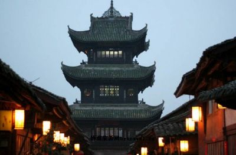
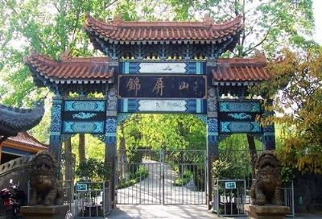
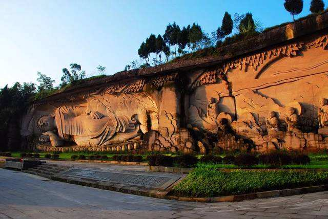
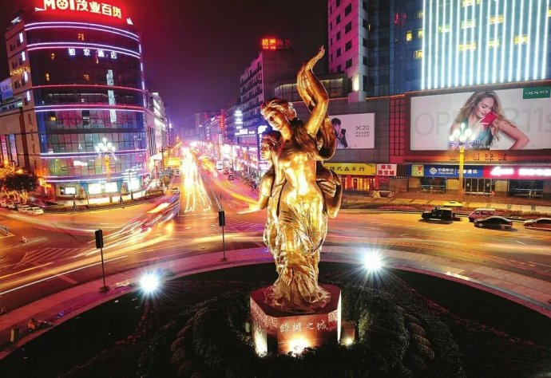
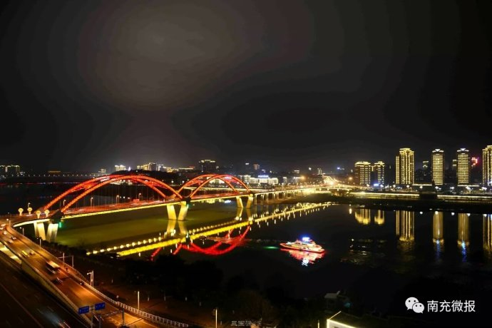

阆中位于四川东北部，嘉陵江中上游，是川北政治、经济、军事、文化重镇。战国时为巴国国都，秦灭巴置阆中县迄今2300多年，历代为郡、州、府、道治所。明末清初为四川临时省会达17年之久。阆中素有风水宝地之美誉，三面环山，四面环水，风光钟灵毓秀，如诗如画。阆中是全国保存最好的四座古城之一，是四川省唯一立法保护的古城。阆中文化底蕴深厚，名胜古迹众多，为国家历史文化名城。阆中是华夏本源文化的发祥地之一，是巴文化的主要发源地，是汉唐民间天文研究中心，是四川状元之乡，阆中古城有张飞庙、永安寺、五龙庙、滕王阁、观音寺、巴巴寺、大佛寺、川北道贡院等8处全国重点文物保护单位；有邵家湾墓群、文笔塔、石室观摩崖造像、雷神洞摩崖造像、牛王洞摩崖造像、红四方面军总政治部旧址、华光楼等22处省级文物保护单位。

阆中锦屏山系国家AAAA级风景区，古称阆山，有“天下第一江山”之誉。位于中国历史文化名城——四川 阆中市锦屏山 -省阆中市城南，因“花木错杂似锦,两峰连列如屏”，故人们通常都叫锦屏山。吴道子三百里《嘉陵江山图》，即以锦屏山为轴心，杜甫诗句“阆中 张宪祠 盛事可肠断，阆州城南天下稀”即指此。现在的锦屏山园林共占地80多万平方米，锦屏山东侧为黄花山，有配衬古城风水的奎星楼，始建于明末清初，名魁星阁。
南充凌云山简介 凌云山海拔562.6米，有左青龙、右白虎、前朱雀、后悬壶之独特地貌，山势连绵，林木参天，具有“雄、奇、险、幽”四大特色，山顶凌云古刹始建于汉末，现存真武宫为清道光年间重建，有遇仙岭、降魔台、老君洞、老龙洞、望夫崖、舍身崖、将军坟等自然奇观，享有“果郡灵山”之美誉。


南充市夜景大美，春节将至，处处华丽点缀。每当夜晚来临，华灯初上，美丽南充出现在我们面前，展示着她的美丽。